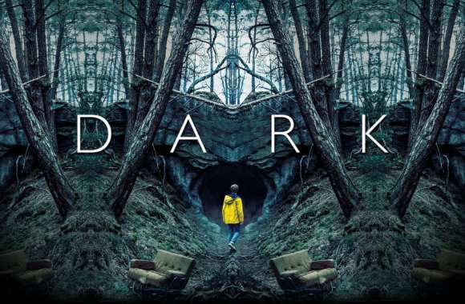

8 Seasons
Start : 2012
End : 2020
 The Flash
The Flash
6 Seasons
Start : 2014
End : No Date
Arrow

- Speach : The series, titled simply Arrow, follows the story of Oliver Queen after he is rescued from a desert island named 'Lian Yu' where he was shipwrecked five years earlier. It also features flashbacks to his time away.
- One of the productor, Marc Guggenheim, described the show as more of a "hero show" than a superhero one, wanting the show to be realistic, and stated that much of the inspiration for the flashback sequences was drawn from Green Arrow: Year One.
- Andrew Kreisberg, a another productor, explained one thing : "We designed (Oliver Queen) as a character a little more tortured" than the comic series Green Arrow.
- The series premiered in North America on October 10, 2012 and was picked up for a full season later that a month. The show went on to air for seven full seasons with a shortened eighth and final season, consisting of ten episodes, concluding in January 2020.
- The series became the progenitor of a franchise of television shows and other associated media based around adaptations of a variety of DC Comics characters, set within a shared universe, collectively known as the 'Arrowverse', including The Flash, Supergirl, Legends of Tomorrow and Batwoman.
The Flash
- Speach : The series, titled simply Arrow, follows the story of Oliver Queen after he is rescued from a desert island named 'Lian Yu' where he was shipwrecked five years earlier. It also features flashbacks to his time away.
- One of the productor, Marc Guggenheim, described the show as more of a "hero show" than a superhero one, wanting the show to be realistic, and stated that much of the inspiration for the flashback sequences was drawn from Green Arrow: Year One.
- Andrew Kreisberg, a another productor, explained one thing : "We designed (Oliver Queen) as a character a little more tortured" than the comic series Green Arrow.
- The series premiered in North America on October 10, 2012 and was picked up for a full season later that a month. The show went on to air for seven full seasons with a shortened eighth and final season, consisting of ten episodes, concluding in January 2020.
- The series became the progenitor of a franchise of television shows and other associated media based around adaptations of a variety of DC Comics characters, set within a shared universe, collectively known as the 'Arrowverse', including The Flash, Supergirl, Legends of Tomorrow and Batwoman.

Dark
2 Seasons
Start : 2017
End : No Date
 3%
3%
3 Seasons
Start : 2016
End : No Date
Dark